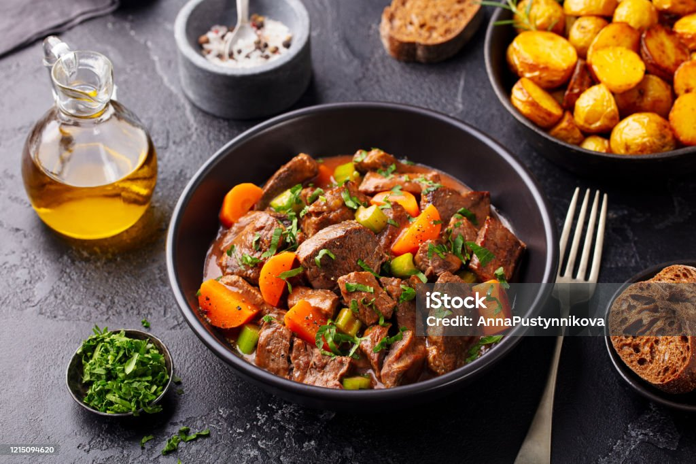

French cuisine, a global standard of culinary excellence, is characterized by its meticulous techniques, emphasis on fresh, seasonal ingredients, and regional diversity. From the rustic stews of the countryside to the refined dishes of Parisian bistros, French cooking embodies a deep respect for tradition and a passion for flavor. As Julia Child once said, In France, cooking is a serious art form and a national sport.
Central to this culinary heritage is the art of braising, a technique that transforms tougher cuts of meat into tender, flavorful masterpieces.
Beef Bourguignon, a quintessential French dish, exemplifies this art. Originating in the Burgundy region, renowned for its exceptional beef and red wine, this stew reflects the area’s agricultural bounty. Historically, it was a peasant dish, born out of the need to tenderize inexpensive cuts of beef through long, slow cooking in local wine. The dish’s evolution mirrors the region’s history, gradually moving from a simple, rustic staple to a celebrated culinary icon.
The key to Beef Bourguignon lies in its ingredients: tender beef, robust red Burgundy wine, and aromatic vegetables like carrots, onions, and mushrooms.
These elements, slowly simmered together, create a rich, complex flavor profile. The dish’s enduring popularity stems from its ability to transform humble ingredients into a luxurious, comforting meal, a testament to the transformative power of French culinary tradition.
The foundation of any great Beef Bourguignon lies in the quality of its ingredients. The beef, traditionally a cut like chuck or brisket, must be robust and well-marbled, capable of withstanding the long, slow braise that will render it meltingly tender. The wine, a Burgundy of course, or a good quality Pinot Noir, is not merely a cooking liquid but a crucial flavor component. Its fruity notes and earthy undertones will permeate the entire dish, adding complexity and depth. The vegetables, from the earthy mushrooms to the sweet pearl onions, contribute their own distinct flavors, creating a harmonious balance.
The preparation of the beef is the first movement in this culinary symphony. The meat is typically cut into generous cubes, ensuring that each piece will retain its succulence during the long cooking process. It is then browned in a heavy-bottomed pot, a crucial step that develops a rich, caramelized crust, adding layers of flavor to the final dish. This browning process, known as the Maillard reaction, creates a depth of flavor that cannot be replicated through other means.
The Mirepoix, a classic French base of diced carrots, onions, and celery, forms the heart of the dish. These vegetables, gently sautéed in the rendered beef fat, release their aromatic compounds, creating a savory foundation for the stew. The addition of garlic and herbs, such as thyme and bay leaf, further enriches the flavor profile, adding a touch of herbaceous complexity.
The wine, the soul of the dish, is then introduced. It is poured into the pot, deglazing the caramelized bits from the bottom, capturing their intense flavor. The beef is then returned to the pot, submerged in the rich, red wine broth. A generous amount of beef stock is added, ensuring that the meat is fully covered, allowing it to slowly braise and become exquisitely tender. The long, slow braise is the heart of the process. This patient cooking method, typically lasting several hours, allows the beef to break down, its connective tissues melting into gelatin, creating a luxurious, melt-in-your-mouth texture. The wine, meanwhile, reduces and intensifies, its flavors infusing the meat and vegetables. The gentle simmering allows the flavors to meld and deepen, creating a harmonious and complex whole.
The addition of mushrooms and pearl onions adds another layer of texture and flavor to the dish. The mushrooms, sautéed until golden brown, contribute their earthy notes, while the pearl onions, gently caramelized, add a touch of sweetness. These ingredients are typically added towards the end of the braising process, ensuring that they retain their texture and flavor.
Finally, the thickening of the sauce brings the dish to a harmonious conclusion. Traditionally, a beurre manié, a mixture of butter and flour, is whisked into the simmering liquid, creating a rich, velvety sauce that clings to the beef and vgetables. This thickening process transforms the braising liquid into a luxurious, glossy sauce
Your Shopping List
- Beef
- Bacon
- Beef stock
- Bordeaux or Pinot Noir
- Celery
- Onions
- Mushrooms
- Parsley
- Flour
- Butter
- Tomato paste
- Bay leaves
- Salt
- Pepper

Recipe
- 6 ounces bacon roughly chopped
- 3 pounds beef brisket trimmed of fat, chuck steak or stewing beef cut into 2 inch chunks
- 1 large carrot
- 1 large white onion
- 6 cloves garlic minced (divided)
- 1 pinch coarse salt
- 1 pinch ground pepper
- 2 tablespoons flour
- 12 pearl onions (optional)
- 3 cups red wine like Bordeaux, Pinot Noir, or a Chianti – for a milder sauce, use only 2 cups of wine
- 2-3 cups beef stock (if using 2 cups of wine, use 3 cups beef stock)
- 2 tablespoons tomato paste
- 1 beef bouillon cube crushed
- 1 teaspoon fresh thyme, finely chopped
- 2 tablespoons fresh parsley finely chopped, divided
- 2 bay leaves
- 1 pound white mushroomsfresh, small or brown mushrooms, quartered
- 2 tablesoons butter
“A recipe has no soul. You, as the cook, must bring soul to the recipe.”
Instructions
Traditional Oven Method
- Preheat the oven to 350°
- Heat the oil in a large dutch oven or heavy based pot. Sauté the bacon over medium heat for about 3 minutes, until crisp and browned. Transfer with a slotted spoon to a large dish and set aside.
- Pat dry beef with paper towel; sear in batches in the hot oil/bacon fat until browned on all sides. Remove to the dish with the bacon.
- In the remaining oil/bacon fat, sauté the carrots and diced onions until softened, (about 3 minutes), then add 4 cloves minced garlic and cook for 1 minute. Drain excess fat (leave about 1 tablespoon in the pan) and return the bacon and beef back into the pot; season with ½ teaspoon coarse salt and ¼ teaspoon ground pepper. Sprinkle with flour, toss well and cook for 4-5 minutes to brown.
- Add the pearl onions, wine and enough stock so that the meat is barely covered. Then add the tomato paste, bullion and herbs. Bring to a simmer on the stove.
- Cover, transfer to lower part of the oven and simmer for 2 to 3 hours, or until the meat is fall apart tender (adjust the heat so that the liquid simmers very slowly).
- In the last 5 minutes of cooking time, prepare your mushrooms: Heat the butter in a medium-sized skillet/pan over heat. When the foam subsides, add the remaining 2 cloves garlic and cook until fragrant (about 30 seconds), then add in the mushrooms. Cook for about 5 minutes, while shaking the pan occasionally to coat with the butter. Season with salt and pepper, if desired. Once they are browned, set aside.
- Place a colander over a large pot (I do this in my clean kitchen sink). Remove the casserole from the oven and carefully empty its contents into the colander (you want to collect the sauce only). Discard the herbs
- Return the beef mixture back into the dutch oven or pot. Add the mushrooms over the meat.
- Remove any fat off the sauce( if any) and simmer for a minute or two, skimming off any additional fat which rises to the surface.
- You should be left with about 2 ½ cups of sauce thick enough to coat the back of a spoon lightly. If the sauce is too thick, add a few tablespoons of stock. If the sauce is too thin, boil it over medium heat for about 10 minutes, or until reduced to the right consistency.
- Taste for seasoning and adjust salt and pepper, if desired. Pour the sauce over the meat and vegetables.
- If you are serving immediately, simmer the beef bourguignon for 2 to 3 minutes to heat through. Garnish with parsley and serve with mashed potatoes, rice or noodles.
- To serve the following day, allow the casserole to cool completely, cover and refrigerate. The day of serving, remove from refrigerator for at least an hour before reheating. Place over medium-low heat and let simmer gently for about 10 minutes, basting the meat and vegetables with the sauce.